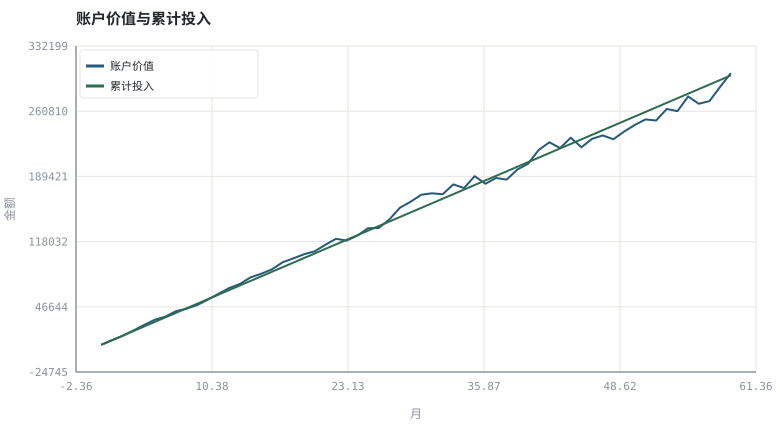
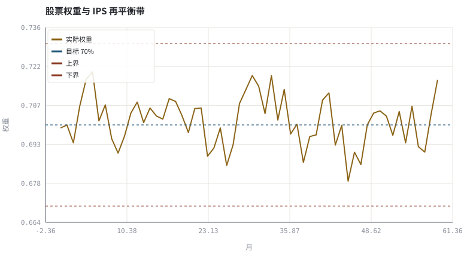

第 31 章投资政策说明书与长期复盘
把目标、约束、流程与例外写下来，才轮得到讨论今年赚了多少。
本章位置：全书终章。回望 第 00 章 · 投资是一套可验证的工程系统 提出的七层工程分解：目标、约束、数据、假设、检验、执行、复盘，到本章正好闭环。
IPS 是配置文件 + SLO + 变更日志：目标权重是 config，再平衡带是告警阈值，决策日志是 audit log。没有日志的系统无法复盘，也无法证明自己没有临场改规则。
- 能写出一份含目标、约束、规则与例外的 IPS。
- 能模拟「按纪律执行」与「随意偏离」的长期差异。
- 能区分决策质量与结果质量，并用决策日志复盘。
- 能把 TWR、MWR、费用与合规检查纳入年度复盘。
§知识点地图
每个知识点都配了 1～2 个扩展学习链接；本章完整资源清单见 扩展学习。
| # | 知识点 | 扩展学习 | 状态 |
|---|---|---|---|
| 1 | 投资政策说明书 IPS | Investment policy statement · Asset allocation | 正文已覆盖 |
| 2 | 目标与约束 | Investment policy statement · Time-weighted return | 正文已覆盖 |
| 3 | 再平衡规则与例外 | Rebalancing investments · Asset allocation | 正文已覆盖 |
| 4 | 决策日志 | Investment policy statement · Time-weighted return | 正文已覆盖 |
| 5 | TWR / MWR 复盘 | Investment policy statement · Time-weighted return | 正文已覆盖 |
| 6 | 费用与税 | Investor.gov（SEC 投资者教育） · Bogleheads Wiki | 正文已覆盖 |
| 7 | 行为约束与冷却期 | Behavioral finance · Prospect theory | 正文已覆盖 |
| 8 | 年度回顾清单 | Investment policy statement · Time-weighted return | 正文已覆盖 |
§31.1IPS 是一份给自己签的 SLA
| 章节 | 内容 | 可检查的形式 |
|---|---|---|
| 目标 | 用途、时间 horizon、所需现金流 | 可量化的目标区间，而非「多多益善」 |
| 约束 | 流动性、最大回撤、杠杆、集中度、合规 | 带数值的硬阈值 |
| 规则 | 目标权重、再平衡带、定投额、下单方式 | 可执行的 if-then |
| 例外 | 允许偏离的条件、审批与冷却期 | 书面记录 + 生效日期 |
| 复盘 | 频率、指标、归因、日志归档 | 固定模板与数据 manifest |
写下来的意义不在于预测未来，而在于让未来的你无法悄悄改规则。这与工程里把 SLO、回滚条件与值班手册提前写死是同一个道理。
§31.2复盘要看决策质量，不只看收益
好决策可能亏钱，坏决策可能赚钱。年度复盘应至少回答四问：是否遵守了 IPS？偏离时有没有记录理由？收益来自配置、选股、因子还是运气（第 27 章归因）？成本与税能否再降（第 05 章）？把答案与当时的市场信息一起存进决策日志，才能避免用结果反推过程。
§31.3全书收束：一条可复现的链路
目标(IPS) → 产品(03) → 定价(09–12) → 组合(13–14) → 盘面(15–20) → 证据(21–28) → 执行(29) → 风险(30) → 复盘(31)
这条链路的每一环都可以用本书的 Python 脚本替换成你自己的数据与参数：改参数 → 重跑 → 看图 → 写结论。把投资变成可复现的工程，是这门课唯一想留下的习惯。
所有示例都是合成数据与模型示意，不构成投资建议、产品推荐或收益承诺。真实投资请遵守所在市场的法规、适当性要求与风险揭示。
§Python 分析实例
实验 31-1 · 按 IPS 执行的五年账户与复盘表
#!/usr/bin/env python3
# -*- coding: utf-8 -*-
"""模拟月度定投、阈值再平衡与决策日志，输出 TWR/MWR、费用与合规检查。
数据为合成数据或模型示意，仅用于教学，不构成投资建议。
"""
from __future__ import annotations
import math
import pathlib
import random
import statistics
import sys
sys.path.insert(0, str(pathlib.Path(__file__).resolve().parents[3] / "tools"))
from chart import Chart, candlestick, heatmap, BLUE, RED, GREEN, AMBER
FIG = pathlib.Path(__file__).resolve().parents[1] / "fig"
FIG.mkdir(exist_ok=True)
random.seed(7)
# ---- 参数区 ----
YEARS, ANN = 5, 12
MONTHS = YEARS * ANN
MONTHLY = 5000.0 # 每月投入
TARGET, BAND = 0.70, 0.03 # 股票目标权重与再平衡带
FEE = 0.001 # 调仓成本率
# ---- 计算与作图 ----
rng = random.Random(7)
rs, rb = [], []
for i in range(MONTHS):
z, z2 = rng.gauss(0, 1), rng.gauss(0, 1)
rs.append((0.012 if i < 30 else -0.004) + 0.045 * z)
rb.append(0.0015 + 0.008 * (-0.15 * z + math.sqrt(1 - 0.0225) * z2))
cash_in, value, stock_part, bond_part = 0.0, 0.0, 0.0, 0.0
unit, w_prev = 1.0, TARGET
values, contributed, weights, log = [], [], [], []
for i in range(MONTHS):
unit *= (1 + w_prev * rs[i] + (1 - w_prev) * rb[i])
cash_in += MONTHLY
stock_part += MONTHLY * TARGET
bond_part += MONTHLY * (1 - TARGET)
stock_part *= (1 + rs[i])
bond_part *= (1 + rb[i])
value = stock_part + bond_part
w = stock_part / value
if abs(w - TARGET) > BAND:
trade = abs(TARGET - w) * value
value -= trade * FEE
stock_part, bond_part = value * TARGET, value * (1 - TARGET)
w = TARGET
log.append((i, "再平衡", round(trade, 0)))
w_prev = w
values.append(value)
contributed.append(cash_in)
weights.append(w)
twr = unit - 1
cf = [0.0] * (MONTHS + 1)
for i in range(MONTHS):
cf[i] -= MONTHLY
cf[-1] += values[-1]
def npv(rate):
return sum(c / (1 + rate) ** i for i, c in enumerate(cf))
lo, hi = -0.30, 0.30
for _ in range(120):
mid = (lo + hi) / 2
if npv(mid) > 0:
lo = mid
else:
hi = mid
mwr = (1 + (lo + hi) / 2) ** ANN - 1
c = Chart(FIG / "31-plan.svg", "账户价值与累计投入", xlabel="月", ylabel="金额")
c.line(range(MONTHS), values, BLUE, label="账户价值")
c.line(range(MONTHS), contributed, GREEN, label="累计投入")
print("计划图:", c.save())
d = Chart(FIG / "31-drift.svg", "股票权重与 IPS 再平衡带", xlabel="月", ylabel="权重")
d.line(range(MONTHS), weights, AMBER, label="实际权重")
d.hline(TARGET, BLUE, label="目标 70%")
d.hline(TARGET + BAND, RED, label="上界")
d.hline(TARGET - BAND, RED, label="下界")
print("权重图:", d.save())
max_drift = max(abs(w - TARGET) for w in weights)
print("期末账户=%.0f 累计投入=%.0f TWR(单位净值)=%.2f%% MWR年化=%.2f%%" %
(values[-1], cash_in, 100 * twr, 100 * mwr))
print("决策日志 %d 条 | 最大偏离=%.2f%% 带宽=%.1f%% | 合规=%s" %
(len(log), 100 * max_drift, 100 * BAND, "是" if max_drift <= BAND + 0.02 else "需复核"))操作：把 BAND 改成 0.15，观察决策日志条数与最大偏离；再改回 0.03 比较费用。 预期与判读：阈值再平衡让权重始终落在事先声明的带内，决策日志把每次偏离都变成可审计记录。TWR 与 MWR 不同是因为存在持续现金流，两者分别回答「策略」与「投资者」的问题。
改参数看趋势：把 MONTHLY 设为 0 并给初始资金，TWR 与 MWR 应趋于一致。 文件位置：part6/31-ips-review/code/31-ips.py


代码块右上角可一键复制；仓库里的 code/*.py 由 tools/extract_code.py 从这些代码块自动抽取。脚本只用标准库、固定 random.seed(7)，运行后写出 fig/*.svg；批量运行用 ./tools/run_python.sh。
§本章参考资料
按本章知识点挑选的精读资料；更多检索入口见 扩展学习。
Investment policy statement
百科 · 参考资料把目标、约束与流程写成契约
怎么用：投资政策说明书的标准要素https://en.wikipedia.org/wiki/Investment_policy_statement
Time-weighted return
百科 · 参考资料剔除外部现金流后的策略收益
怎么用：时间加权收益与策略评估https://en.wikipedia.org/wiki/Time-weighted_return
Money-weighted return
百科 · 参考资料投资者实际体验到的IRR
怎么用：资金加权收益与投资者体验https://en.wikipedia.org/wiki/Money-weighted_return
SPIVA 主动/被动业绩对比
机构 · 参考资料主动基金相对基准的长期胜率统计
怎么用：长期主动/被动业绩对照，用于校准预期https://www.spglobal.com/spdji/en/research-insights/spiva/
§常见误区
- 把 IPS 写成收益目标而不是约束与流程。
- 行情不利时临时放宽再平衡带且不留记录。
- 用结果好坏评价决策质量。
- 复盘只看收益率，不看费用、税、归因与合规。
§习题与思考
- 写一份自己的 IPS，至少包含四条带数值的硬约束与两条例外条款。
- 在示例里加入「偏离超带但延迟一个月才调仓」，量化成本与合规差异。
- 设计一份年度复盘模板，列出至少六项指标与各自的判断标准。
§扩展学习
以下资料按本章知识点挑选，可直接精读或对照真实数据；知识点地图里每一条也挂了 1～2 个直达链接。
- Investment policy statement（百科）：把目标、约束与流程写成契约
Investment policy statement - Time-weighted return（百科）：剔除外部现金流后的策略收益
Time-weighted return - Money-weighted return（百科）：投资者实际体验到的IRR
Money-weighted return - Investor.gov（SEC 投资者教育）（机构）：复利、费用、风险与常见投资骗局的官方说明
Investor.gov（SEC 投资者教育） - Bogleheads Wiki（课程）：长期指数投资、再平衡与税费的实践型百科
Bogleheads Wiki - SPIVA 主动/被动业绩对比（机构）：主动基金相对基准的长期胜率统计
SPIVA 主动/被动业绩对比
继续扩展：在 Google Scholar 检索本章相关论文 · 在 MIT OCW 检索配套课程 · 在 arXiv 检索预印本 · 全书参考资源总表 · 附录 A 速查与链接总表